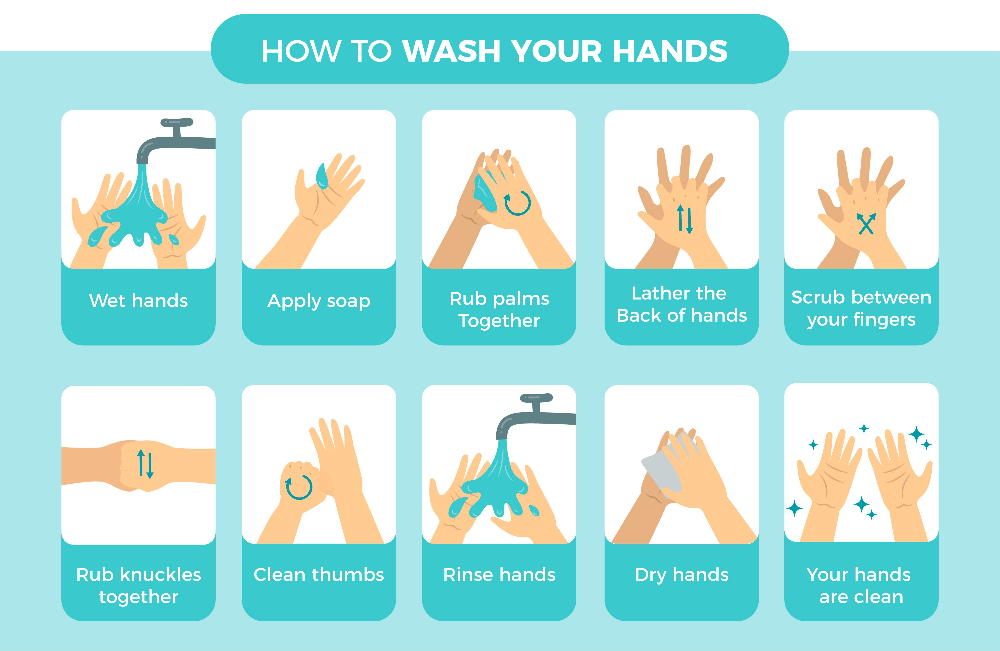
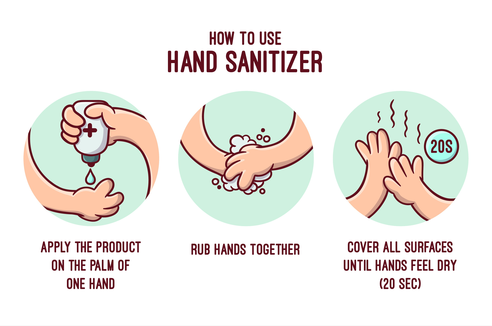

A) Transmission Situations Prevented by:
As COVID 19 affects the respiratory system it is best to WEAR A MASK to prevent spread of COVID 19 infection to yourself and the people around you
How to wear a Mask?
The mask should cover your MOUTH AND NOSE properly for it to be of any use.
- Clean your hands for at least 20 seconds with soap and water or alcohol-based hand sanitizer.
- Before wearing the mask, inspect for any tears or holes.
- Orient the mask in the right direction. Locate metal clip for the top of the mask. For surgical masks, colored side is outside.
- Place the top of the mask on the bridge of your nose, molding the fabric or metal strip to the shape of your nose.
- Secure the elastic or straps around your ears or head.
- Pull the bottom of the mask down to mouth and chin. Check for a tight seal with no gaps.
- Pull the bottom of the mask down to mouth and chin. Check for a tight seal with no gaps.
- Discard it immediately in a closed bin (or for cloth masks but in a sealed bag for washing) and thoroughly clean your hands for 20 seconds with soap and water.
- It’s advisable to wash your cloth masks after every use.
Droplet Transmission
Respiratory droplets produced when the infected person coughs or sneezes can infect the people (by entering into their mouths, noses, or eyes) who are within 1 meter distance
Surgical mask / Cloth mask (if within 1 mt of infected case)
Contact Transmission
Respiratory droplets settles down on floor and surfaces, inanimate objects. Afterwards, when someone touches the floor, surfaces, door handles, inanimate objects etc and then touches their face (nose, mouth, eyes), virus can easily spread
Hand hygiene (the most important measure)
Airborne Transmission
Airborne transmission from person-to-person within a range of 1 metre Aerosol generating situations: coughing, spitting, singing, vomiting
N95 Mask
B) Hand hygiene:
We all know by now that COVID-19 is dangerous and is a killer in some cases. But can we possibly kill it first?
The answer is yes! The weapons to kill COVID-19 are easily accessible, and can be found in our own homes.
Hand hygiene is very very important for the prevention and control of COVID-19.
Hand hygiene can be performed with soap and water or alcohol-based hand rubs (>60% alcohol concentration)
Duration: Hand rub 20sec & Hand wash 40sec.
However, soap and water is considered by far the superior method compared to hand sanitizers.
Indications for using handrub/sanitizer:
- If the hands are not visibly dirty
- Not contaminated with body fluids
Indications for using hand wash:
- Hands are visibly dirty, contaminated with body fluids
- After using restroom
- Before handling medication or food
But how does the virus die by washing hands?
We can compare SARS-CoV-2 with a piece of chewing gum stuck to our hands. Now, if we try removing the chewing gum with simply water, it would flow over it and the gum would remain attached to our hands.
The same thing happens with the virus.
Like gum, a virus is actually very sticky, and likes to stick onto our cells.
The virus is an invisible chewing gum on our hands. When using soap, it binds with the virus, and breaks the membrane of the virus, killing it in the process. Then, water washes the virus into the drain.
 Infographic vector created by freepik - www.freepik.com  Infographic vector created by freepik - www.freepik.comC) Respiratory hygiene and Cough etiquette:
DO's
DON'Ts
Cough/sneeze with a tissue paper or into your sleeve if no tissue is available
Don’t cough/sneeze on your hands Do hand hygiene if coughed/sneezed on hands
Turn head away from others when coughing/sneezing
Don’t cough/sneeze on nearby people Do not spit here and there
If tissues are used, discard it immediately
Don’t throw tissues anywhere
Maintain 1 meter (2 arm) distance if you are coughing/sneezing, from people with respiratory symptoms, from contacts of corona cases who are in quarantine.
Do not stay within 1 meter from others if you have cough/sneeze, where people have respiratory symptoms and from contacts of corona cases who are in quarantine
Avoid touching your face, eyes, nose, mouth If you have to, sanitize/ wash your hands before
D) Practice physical distancing:
(Social distancing refers to keeping a safe space between yourself and other people who are not from your household.)
It doesn’t mean avoiding people
Limit close face-to-face contact with others
Stay at least 6 feet (about 2 arm lengths) from other people who are not from your household in both indoor and outdoor spaces
Avoid gatherings/ events
Travel in covid: Travel in such times should be avoided at any cost , only step out of your homes for essential things and for medical help. Avoid travel if unnecessary.
E) When and how to clean surfaces at home:
Use surface disinfectants for Home disinfection.
Clean high-touch surfaces (frequently touched surfaces) regularly/ daily and after you have visitors in your home.
Focus on surfaces which are touched frequently such as doorknobs, tables, handles, light switches, and countertops.
Clean all surfaces in your house when they are visibly dirty or as needed. Clean them more frequently if people in your house are highly likely to get sick from COVID-19.
Clean surfaces using a product suitable for each surface and follow the instructions given with the product.
Most commonly used disinfectant is 0.5% sodium hypochlorite.
You might also choose to disinfect your mobile phone with alcohol wipes.
F) Keep your home well ventilated. Open the windows.
G) Stay home if you feel unwell
H) Avoid public transport or take necessary precautions
I) Refrain from smoking and other activities that weaken the lungs
J) GET VACCINATED:
Refer to our vaccination section for more details or refer reliable sources like mohfw.gov.in or who.int
Incase you need to go to the hospital or to visit your doctor for other conditions:
- Call in advance and confirm, before leaving the house
- Take all the precautions as mentioned above
What to do if someone at home is sick?
- If someone in your family is having any symptom resembling covid it's better to isolate them in a different room till they can be taken for testing of COVID.
- If a person in your family is having other diseases other than covid like hypertension, diabetes etc then you can consult your doctor or go to a hospital or clinic near you.
- Telecommunication is a better option if the disease is not severe
- Make sure that the person infected uses a separate bathroom if possible
- Different utensils must be used for the infected person
- Their clothes must be washed separately
- Whenever someone enters their room or goes within 6 ft of the infected person, make sure to wear double masks or an N95 mask. Protect yourself and limit the extent of your contact.
- Make sure they are eating healthy and having lots of fluids
- Check if they have all the necessary medications the will need
- Make sure that they are monitoring themselves and checking for severe symptoms
- Talk to them, support them as they must be very anxious
- Contact the doctor if any alarming signs of if in doubt
- Track your own health and watch for symptoms
- Caregivers and anyone who has been in close contact with someone who has COVID-19 should stay home and quarantine themselves for 14 days
Maintain this symptom monitoring chart throughout the course of your illness